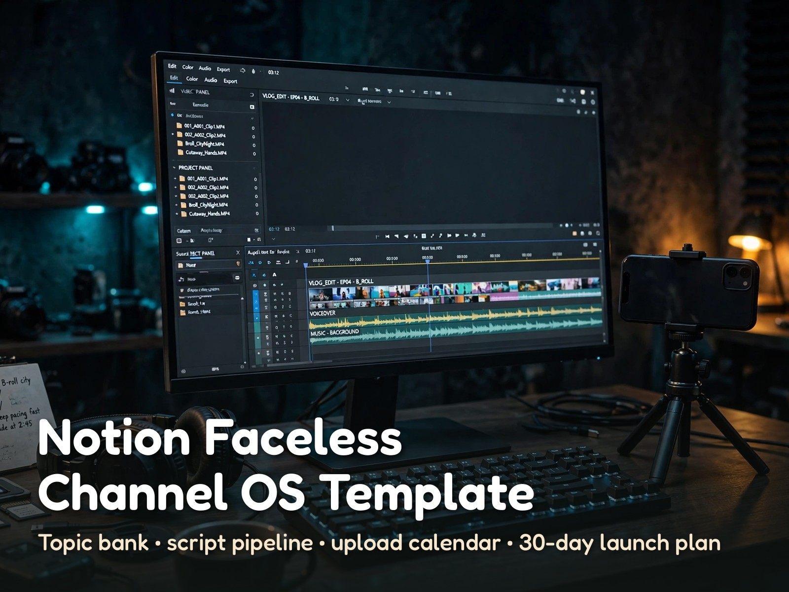

$19 USD — instant download
Notion Faceless Channel OS Template — Topic Bank, Script Pipeline, Upload Calendar & 30-Day Launch Plan
Get it on GumroadRunning a faceless channel is a production job: niches to test, topics to verify, scripts to move, uploads to schedule. Most creators track that in scattered notes, screenshots and memory — and the system breaks the first busy week. Faceless Channel OS puts the whole operation in one Notion workspace: it is the Notion companion to the Faceless Channel AI Kit, where the workflow taught in the kit becomes databases, boards and checklists you actually run.
The channel dashboard links every database and checklist, with this week's uploads and pipeline status visible at a glance. The niche test tracker scores niche ideas before you commit: the five survival tests scored one by one, test videos published, what the data said, and a final verdict field — no more ‘seemed like a good niche’ guesses. The topic bank holds every video idea with its source, a priority rating and a fact-check status field, so unverified ideas cannot sneak into production and you never start a production day from a blank page.
The script pipeline board moves each video from Idea → Drafting → Voiced → Edited → Scheduled → Posted, with a script page template inside carrying the beat structure of a 30–45 second short, hook line first, ready to duplicate for every new video. The upload schedule is a calendar view of publish dates, and every scheduled video carries the pre-publish checklist — title, description, hashtags, final checks — so dumb mistakes get caught before posting. Production checklists for voice-over, stock-footage sourcing and editing live as ready Notion pages, including the free-license rules that keep you out of copyright trouble, and the 30-day launch plan page lays out a realistic first month for one person with a phone and a laptop.
Buy on Gumroad and download the PDF instantly. The PDF contains your template link: open it, click Duplicate in the top-right corner, and the whole system copies into your own Notion workspace â yours to edit, forever. You only need a free Notion account; everything in this template works on Notion's free plan, on phone, tablet and desktop. A getting-started page inside walks you through setup in minutes, so the template is working the same day you buy it. It is built for faceless YouTube and TikTok creators â facts channels, rankings, stories, compilations â who know the basics and need an operating system, not another course. It contains no income claims and no viral guarantees; channels grow at very different speeds and most of the work is consistency. What you get is the complete production system as a working Notion workspace.
This is a digital download — no physical item will be shipped. For personal use; please do not redistribute or resell the file.